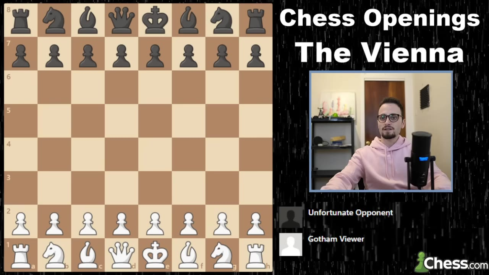
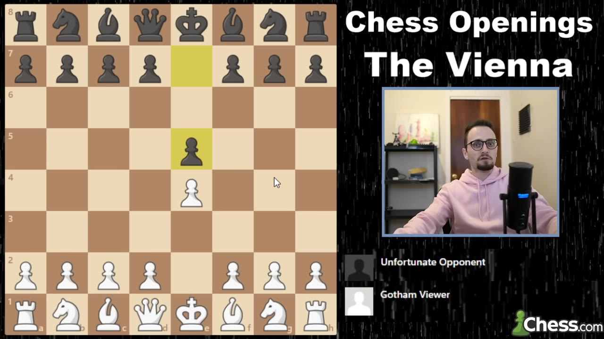
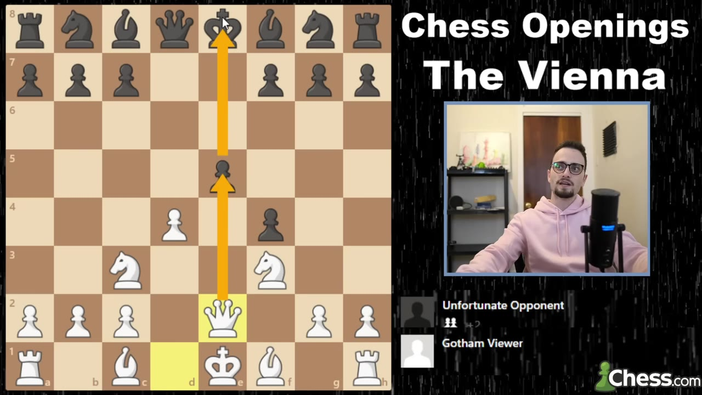
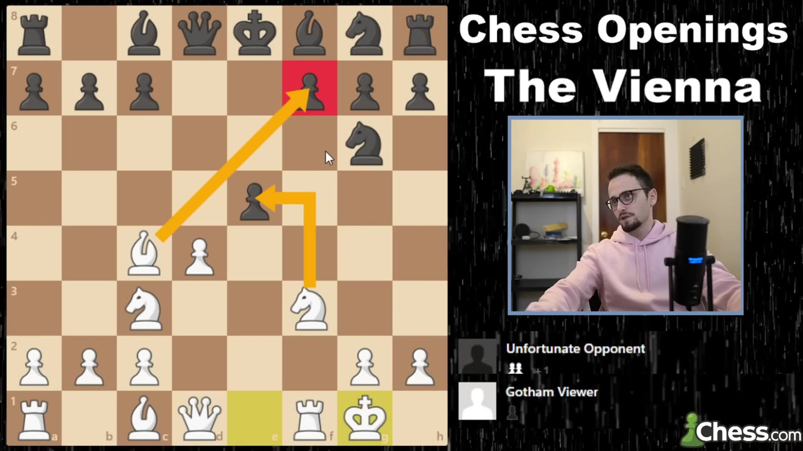
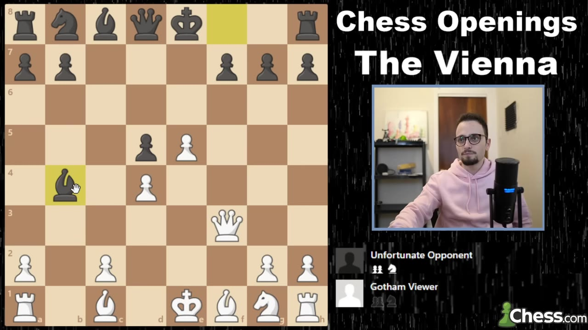
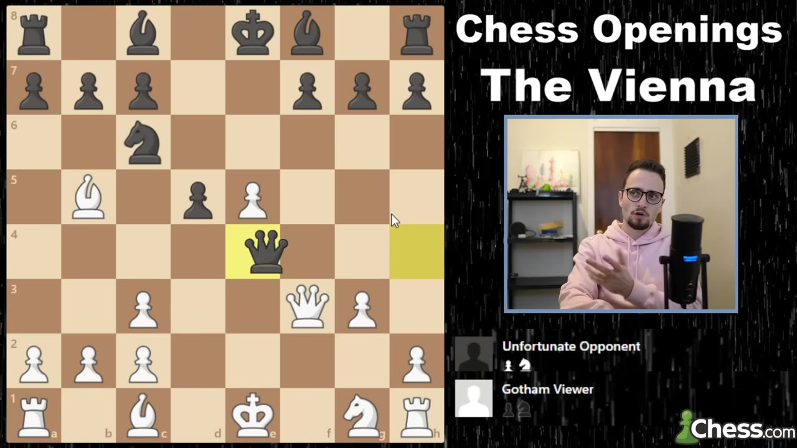
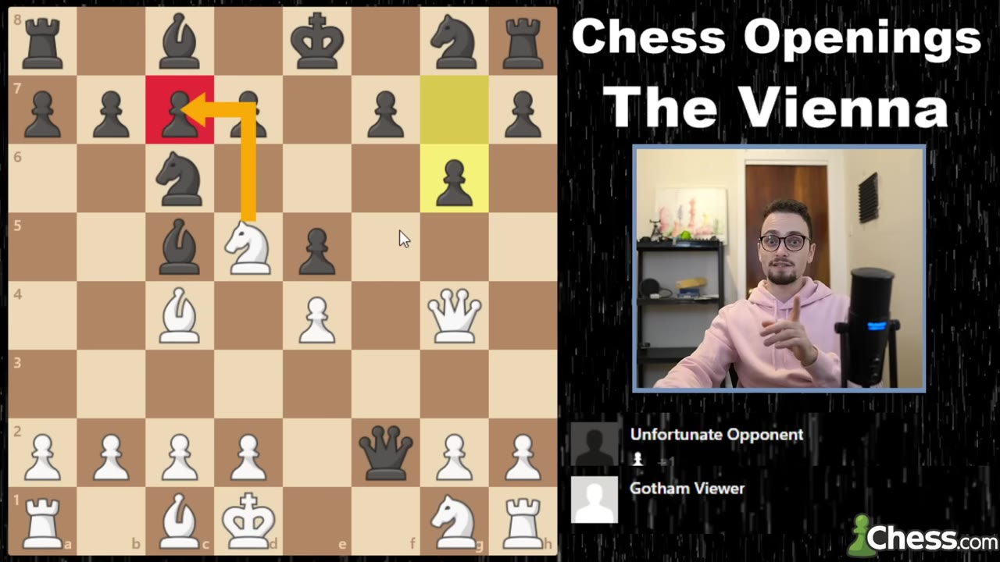
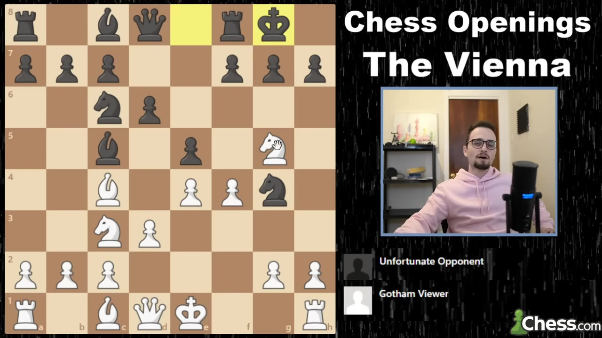
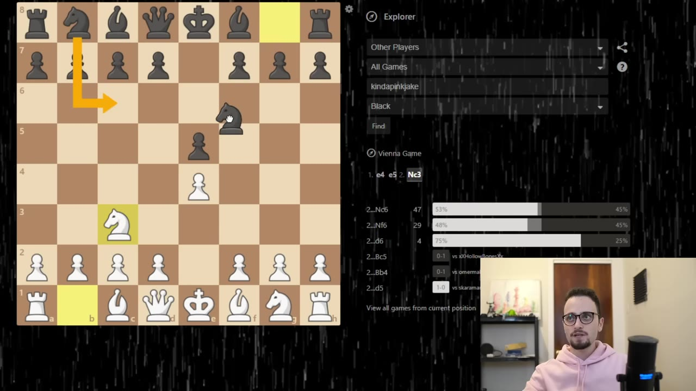

A full 1.e4 e5 2.Nc3 repertoire — the trap-laden Vienna Gambit, every way Black can refuse it, and the database numbers that say it just wins.
Watch on YouTubeMost openings let your opponent settle in. The Vienna doesn't. You play 1.e4 e5 2.Nc3 and you're already off the beaten path — beginner, intermediate, even 2000-plus, it doesn't matter, because almost nobody has prepped for this. The plan is simple and it runs through the whole repertoire: get ready to push f4.

It's pretty rare in a game of chess to be able to surprise your opponent as early as the second move.— Levy Rozman
If you're an e4 player you're going to face 1...e5 constantly, all the way up the ladder. So you answer 2.Nc3, and the one idea to burn into your head is this: you want to play f4 before the knight comes to f3. In just about every position in this opening, f4 comes first. That's it. That's the system.

After 2...Nf6 you play 3.f4 — the Vienna Gambit. Except it's not really a gambit, because Black can't take and hold it. If 3...exf4 you push 4.e5, and now the f6-knight has nowhere forward; it has to retreat, and after you cover Qh4+ with Nf3 you've got a huge lead in development for free. A favorite computer-backed idea: when Black takes back, play Qe2 and pin the pawn to the king.

Just know that accepting the gambit is more or less losing for Black.— Levy Rozman
Black can decline — but only with 3...d6. Try to decline with 3...Nc6 and it's close to lost on the spot: 4.fxe5 Nxe5 5.d4 and it's like a Halloween Gambit where you didn't even sacrifice the knight. The lines spiral into Bxf7+ ideas that win the queen in a handful of moves. So if Black declines, it's d6, and then you calmly develop: bishop to c4 or b5, play d3 so you don't block yourself in, castle, and pile onto the half-open f-file.

If you get 3...d5, your opponent knows what they're doing — or got lucky. You take 4.fxe5, hitting the knight, and after 4...Nxe4 the move is 5.Qf3. It's only the third-most-popular choice in the database, but it's the most direct: straight pressure on the e4-knight. After ...Nxc3 recapture with the b-pawn so you can rebuild with d4 and a monster center. And if Black gets lazy with an early ...c5, punish it: Qg3 is the tricky favorite, freezing their development.

You don't care about your doubled pawns in the center, because you get an open file on the f-file in the long run.— Levy Rozman
Against 5...Nc6 don't grab the knight — pin it to the king and keep developing; the main line runs into a queen trade where you stay comfortable. For the advanced crowd there's a gorgeous sacrificial idea: Be3, give up the queenside, castle, and a quiet-looking Nd4 forks two pieces with Bg5 and mate on e7 lurking. Against 5...f5 you sac the pawn with Qg3, then Be2 eyeing Bh5 — the king gets dragged forward and the attack crashes through.

If Black skips Nf6 and plays 2...Nc6, delay f4 and develop Bc4 first. Now the copycat line — where Black mirrors you — is losing if you know Qg4, hitting g7. Beginners defend with Qf6, then comes the magic: Nd5 hits f6 and c7, they grab a rook, and after the dust settles you play Nh3 and the queen is literally trapped. d3 and c3 glue it in place. He swears you'll never face the engine's best defense in a real game.

Knight to h3 and the queen is trapped — literally just trapped, it can't go anywhere.— Levy Rozman
The popular main line after 2...Nc6 is 3.Bc4 Nf6 — the Two Knights — where you play d3. Against the common 3...Bc5 there's a slick trap: f4, and if ...Ng4 looks like you blundered, you slap back with Ng5 and counter-attack. ...Nxf2 runs into Qh5; ...0-0 thinking f7 is safe runs into f5, disconnecting the bishop from the defense and Black resigns to the f7/h7 threats. Against ...Bg4 the key move is Na4, hitting the bishop and stopping the Nd4 pin.

You just slap them in the face and play knight g5 — now you're counter-attacking.— Levy Rozman
Then the payoff: open an openings database and look at the numbers. A longtime supporter who played 1,160 games of 1...e5 saw the Vienna only 82 times — that's how far off the map it is. In the lines where he faced Bc4 setups, White scored 86%. Eighty-six percent. Even a 2700-rated Russian super-GM, top-ten in his country, had faced the Vienna exactly once on chess.com — against Levy himself. That's the whole pitch: a weapon nobody preps for, scoring like a cheat code.

Eighty-six percent for White in these positions — that's crazy, that is unheard of.— Levy Rozman